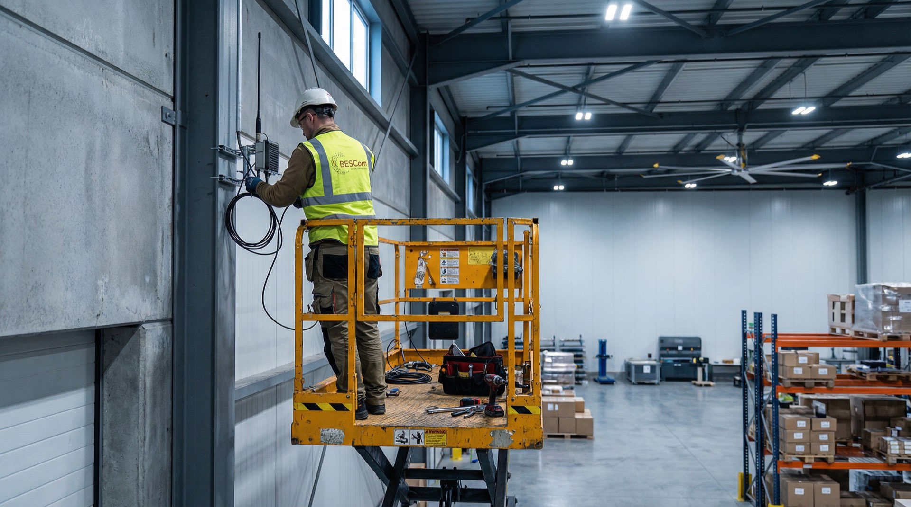

Funkprobleme in der Industriehalle? Schlechte Betriebsfunkabdeckung auf dem Außengelände? BESCom plant, installiert und wartet TETRA- und DMR-Funklösungen für Industrie, Hafen und kritische Infrastruktur – zuverlässig auch unter härtesten Bedingungen.
Schritt 1
Vom analogen Betriebsfunk zu DMR oder TETRA – mit klarer Migrationsstrategie und vollständiger Frequenzbeantragung bei der BNetzA.
Ihr analoges Betriebsfunksystem stößt an seine Grenzen? Schlechte Funkverbindung in der Industriehalle oder auf dem Außengelände? Die Migration zu DMR oder TETRA klingt komplex – und die Frequenzbeantragung bei der Bundesnetzagentur noch komplexer. Ohne erfahrenen Partner riskieren Sie Monate Verzögerung und eine teure Fehlinvestition.
Wir analysieren Ihren Standort, planen das passende TETRA- oder DMR-System und übernehmen die Frequenzbeantragung bei der Bundesnetzagentur vollständig.
„BESCom hat unsere Migration von analog zu DMR vollständig geplant und die Frequenzbeantragung übernommen. Innerhalb von sechs Wochen hatten wir Klarheit."
„Die Standortanalyse war präzise und der Systemvorschlag passte genau zu unseren Anforderungen. Kein Overengineering, keine Lücken."
Schritt 2
Kein Empfang in Stahlhallen oder auf dem Außengelände? Multi-Site-Installation unter laufenden Produktionsbedingungen – ohne Betriebsunterbrechung.
Stahlhallen, Außenbereiche, mehrere Standorte – Industrieumgebungen sind für Funksysteme die härteste Prüfung. Funklöcher in der Halle, tote Winkel auf dem Gelände, Interferenzen zwischen Systemen: Ohne Erfahrung entstehen kostspielige Nachbesserungen und im schlimmsten Fall ein Betriebsfunksystem, das im Ernstfall nicht funktioniert.
Wir installieren vernetzt, testen unter realen Betriebsbedingungen und schulen Ihre Mitarbeiter – damit das System vom ersten Tag an zuverlässig funktioniert.
„Die Installation in unserer Stahlhalle war eine echte Herausforderung. BESCom hat das Problem technisch perfekt gelöst – kein einziger toter Winkel."
„Drei Standorte, eine Inbetriebnahme. BESCom hat alles koordiniert – wir mussten uns um nichts kümmern und konnten weiter produzieren."
Schritt 3
Wir dokumentieren, überwachen und warten Ihre Betriebsfunkanlage – damit ein Ausfall nicht kommt, wenn er am wenigsten passt.
Techniker-Wechsel, fehlende Dokumentation, unbekannte Anlagenzustände – das sind die klassischen Vorboten eines Systemausfalls. Viele Betriebe merken es erst, wenn der Funk im laufenden Betrieb ausfällt: teuer, gefährlich, vermeidbar.
Wir lernen Ihre Anlage kennen, erstellen vollständige Bestandsdokumentationen und etablieren eine präventive Wartungsroutine – auch für Anlagen, die wir nicht selbst installiert haben.
„BESCom hat eine fremde Anlage komplett dokumentiert und in die Wartung übernommen. Innerhalb von einem Monat wussten wir mehr über unsere eigene Infrastruktur als vorher."
„Seit dem Wartungsvertrag mit BESCom hatten wir keinen ungeplanten Ausfall mehr. Das System läuft – und wir wissen immer warum."


Als BODeV-Mitglied und ISO-9001-zertifiziertes Unternehmen arbeiten wir nach den höchsten Standards.

Kontakt Industriefunk
Kostenlose Erstberatung · Antwort innerhalb von 24 Stunden · Kein Verkaufsdruck
Antworten auf die wichtigsten Fragen rund um Betriebsfunksysteme für Industrie und Hafen.
TETRA (Terrestrial Trunked Radio) ist ein digitales Bündelfunksystem für Großnutzer – mit hoher Sicherheit und Gesprächsgruppen-Funktion. DMR (Digital Mobile Radio) ist kosteneffizienter und für kleinere bis mittlere Betriebe ideal. Beide Standards sind digital, verschlüsselt und deutlich leistungsfähiger als analoger Funk. BESCom berät Sie, welches System zu Ihrem Betrieb passt.
Die Bearbeitungszeit bei der Bundesnetzagentur (BNetzA) für eine Frequenzzuteilung beträgt je nach Auslastung 4–12 Wochen. BESCom erstellt alle notwendigen Antragsunterlagen, reicht sie vollständig ein und koordiniert Rückfragen – damit Sie sich auf Ihr Kerngeschäft konzentrieren können.
Ein eigenes Betriebsfunksystem lohnt sich ab ca. 10–15 gleichzeitigen Nutzern, bei räumlich verteilten Standorten oder in Bereichen ohne zuverlässige Mobilfunkabdeckung – z. B. Lagerhallen, Produktionsflächen oder Hafenanlagen. Im Vergleich zu Mobilfunk bietet Betriebsfunk keine laufenden SIM-Kosten, sofortige Gruppenrufe und höhere Ausfallsicherheit.
Für industrielle Umgebungen bietet Betriebsfunk entscheidende Vorteile: Er funktioniert unabhängig von öffentlichen Mobilfunknetzen, ist verschlüsselt, ermöglicht Sofort-Gruppenrufe an alle Mitarbeiter gleichzeitig und ist auch in Stahl- und Betonstrukturen zuverlässig. Im Notfall ist Betriebsfunk das robustere System – ohne Überlastungsrisiko.
Das lässt sich pauschal nicht seriös beziffern – die Investition hängt von der Anzahl der Nutzer, der Standortgröße, dem Ausbauzustand und den gewünschten Funktionen ab. Jeder Betrieb ist anders. Was wir garantieren: Nach einem kostenlosen Erstgespräch erhalten Sie ein verbindliches Festpreisangebot – exakt auf Ihren Bedarf zugeschnitten, ohne Standardpakete und ohne versteckte Folgekosten. Rufen Sie uns an: 040 2111 9111.
Ja. BESCom übernimmt die Wartung und Bestandspflege von Betriebsfunksystemen aller gängigen Hersteller – auch wenn die Anlage nicht von uns installiert wurde. Wir erfassen die Anlage vollständig, erstellen eine Bestandsdokumentation und etablieren präventive Wartungsintervalle nach Herstellervorgaben.